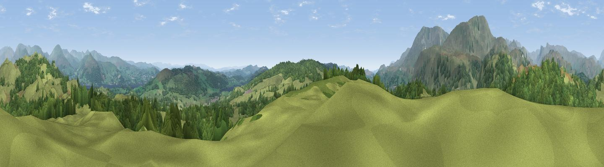

Hill Fell
#2623 in England · top 19% of its area beats it · near HawksheadWhere it is
The exact computed spot (SD 33275 99675). Click the marker for map links.
The view, rendered

A 360° render of this exact spot computed from the terrain model, tree cover and land cover — summer colours, afternoon light, calibrated against photographs of famous viewpoints. Real trees, hedges and buildings will differ in detail.
The panorama
Grey silhouette: terrain skyline in each direction (720 bearings, Earth curvature and refraction included). Dashed green: skyline with trees (+15 m) and buildings (+8 m) as obstacles. Blue strip: how far the ground is visible on each bearing.
Where the view opens
Wedge length = distance to the farthest visible ground on that bearing (vegetation-aware). Rings at 10, 25 and 50 km.
What fills the view
51% grassland · 39% woodland · 10% water
Angular shares of the visible panorama (visual magnitude), not map area. Landscape diversity 0.42 (0–1 Shannon).
Key numbers
More beautiful places nearby
The staircase of upgrades: each row has a higher view potential than everything closer. Driving times are estimates from straight-line distance, calibrated against real road routing — check an actual route before setting out.
| Place | Direction | Drive | Score |
|---|---|---|---|
| Viewpoint near Little Langdale | WNW · 2 km | ~5 min | 75.8 |
| Viewpoint near Coniston | W · 2 km | ~6 min | 76.5 |
| Viewpoint near Coniston | WSW · 3 km | ~8 min | 81.4 |
| Viewpoint near Coniston | W · 4 km | ~9 min | 82.2 |
| Wetherlam | WNW · 5 km | ~10 min | 82.3 |
| Viewpoint near Coniston | W · 6 km | ~13 min | 82.8 |
| Brim Fell | WSW · 6 km | ~13 min | 83.9 |
| Old Man of Coniston | WSW · 6 km | ~13 min | 85.2 |
54.38817, -3.02901 · source: dobih hill · position refined by local search. Computed location — check access rights before visiting.